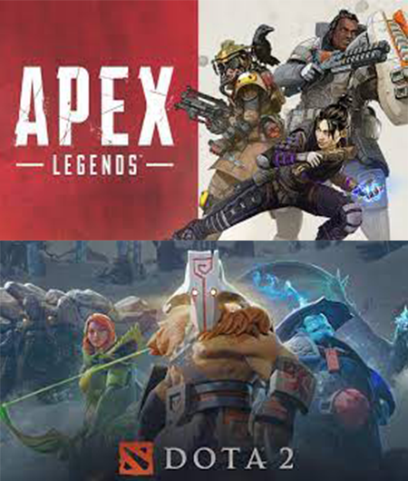

Игра в жанре шутера от первого лица. Ее разработали и выпустили компании Valve и Hidden Path Entertainment. Играть можно на платформах Windows, macOS, Linux, Xbox 360, PlayStation и Xbox One. Участники делятся на две команды, которые сражаются между собой: террористов и спецназ. После нескольких раундов определяют победителя. Игроки могут выбрать несколько режимов игры: обычный, спасение заложников, разминирование и так далее.
Онлайн-игра от студии PUBG Corporation в жанре королевской битвы. По ее сюжету на острове высаживаются до 100 человек. Они ищут оружие и убивают других персонажей. Со временем карта уменьшается и игроки все чаще сталкиваются между собой. Участники могут выбирать, как войти в игру: в одиночку, в паре, в трио или в команде из четырех человек. В начале они выпрыгивают из самолета на остров. Поскольку траекторию полета угадать невозможно, игроки прыгают когда хотят. Через несколько минут территория острова уменьшается – это ускоряет игру. PlayerUnknown’s Battlegrounds выпустили в марте 2017 года. К концу года пиковое количество игроков превысило два миллиона, что сделало ее одной из самых популярных игр в мире.
Микс многопользовательского шутера (когда много пользователей играют внутри виртуального мира.– Прим. ред.) от первог и о лицакоролевской битвы. Игру разработала студия Respawn Entertainment. Подходит для платформ Windows, PlayStation 4, Xbox One и Nintendo Switch. В игре участвуют до 20 команд по три человека. Перед началом матча каждый участник может выбрать одного из 16 персонажей. Затем все игроки садятся на десантный корабль, который летит над картой. В определенный момент они высаживаются на землю и начинают искать снаряжение.
У Apex Legends есть невербальная коммуникация: игроки могут передавать сигналы своему отряду, показывая укрытия, врагов и оружие.
Dota 2 — многопользовательская командная компьютерная игра в жанре MOBA, разработанная и изданная корпорацией Valve. Игра является продолжением DotA — пользовательской карты-модификации для игры Warcraft III: Reign of Chaos и дополнения к ней Warcraft III: The Frozen Throne. Игра изображает сражение на карте особого вида; в каждом матче участвуют две команды по пять игроков, управляющих «героями» — персонажами с различными наборами способностей и характеристиками. Для победы в матче команда должна уничтожить особый объект — «крепость» (он же «трон»), принадлежащий вражеской стороне, и защитить от уничтожения собственную «крепость». Dota 2 работает по модели free-to-play с элементами микроплатежей.
Разработка игры началась в 2009 году, когда компания Valve приняла на работу основного разработчика DotA — IceFrog, а летом 2010 года подала заявку на регистрацию этой торговой марки. 13 октября 2010 года на игровом портале Game Informer игра была анонсирована к выходу в 2011 годy. 15 августа 2011 года в официальном блоге был опубликован трейлер к игре. Dota 2 вышла в июле 2013 года после того, как два года находилась в стадии бета-тестирования.
Изначально Dota 2 была выпущена на игровом движке Source, после чего в 2015 году была портирована на Source 2, став первой работающей на нём игрой. В Dota 2 предусмотрена возможность создавать пользовательские режимы игры, оформление карты и косметические предметы для героев, после чего добавить их в Dota 2 при помощи Steam Workshop. Dota 2 является одной из наиболее популярных игр в Steam и получила в целом положительные отзывы критиков за игровой процесс, качество производства и сохранение положительных сторон своей предшественницы. Среди основных недостатков игры была отмечена сложность обучения.
| Жанры | Игры | Онлайн в день |
|---|---|---|
| Шутеры | Cs-Go | 993,276 |
| Apex Legends | 447,127 | |
| MOBA | Dota2 | 829,357 |
| Выживалка | Rust | 122,154 |